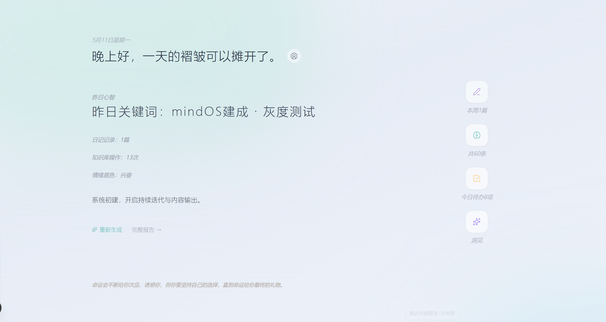
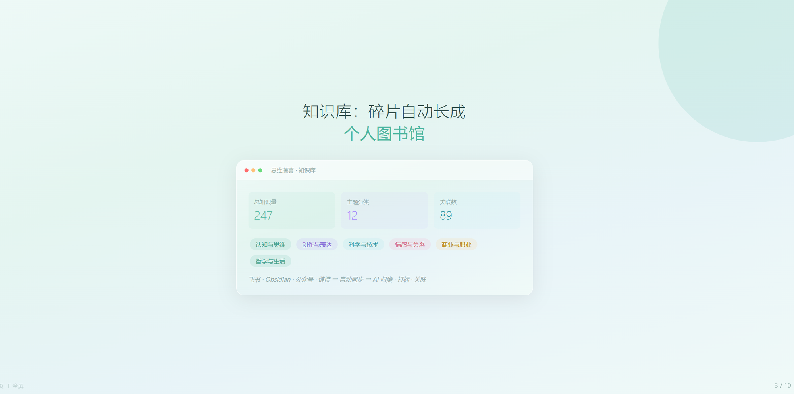
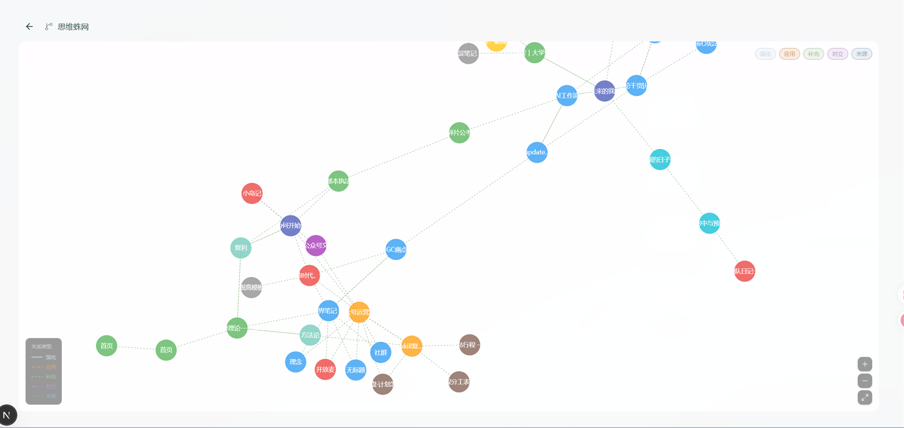
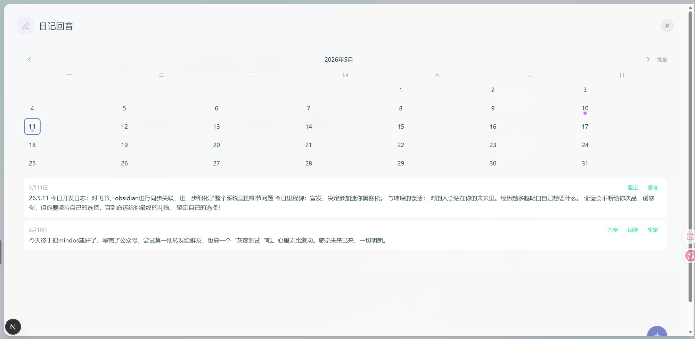
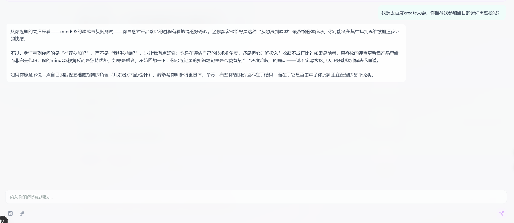
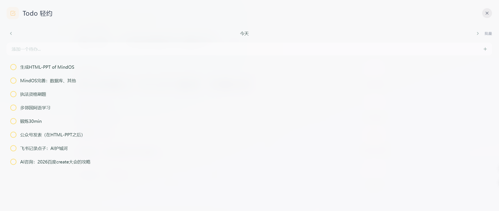
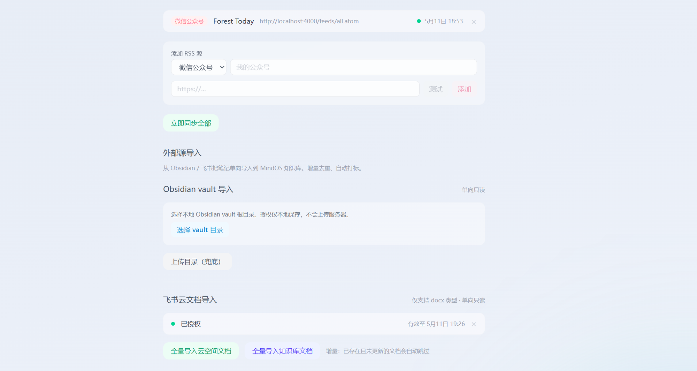
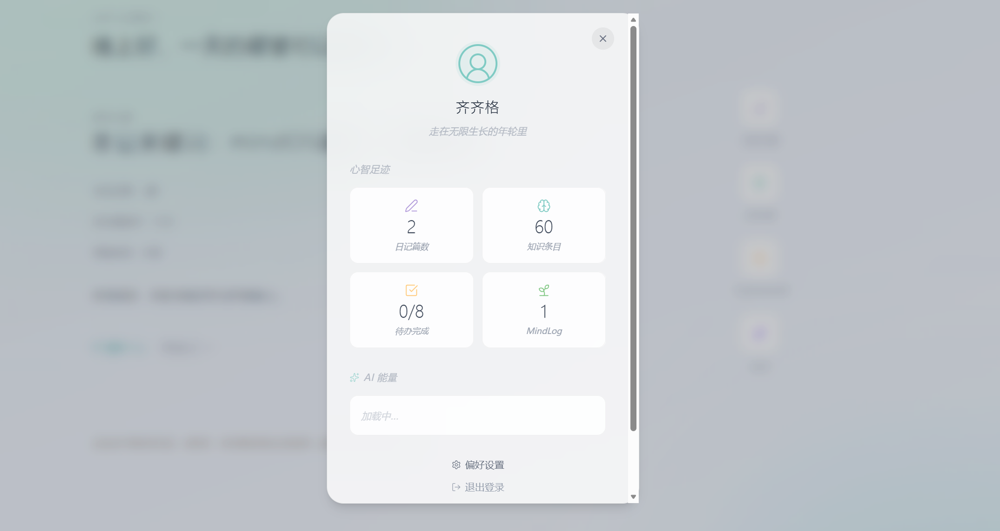

一个能记住你全部思考的私人系统。日记、笔记、创作、待办——所有碎片自动编织成一张心智地图。

所有笔记/链接/文档自动归类、打标、关联——碎片长成一座有逻辑的个人图书馆


飞书文档（OAuth授权）· Obsidian笔记（本地导入）· 公众号/小红书/抖音（RSS订阅）· 随手粘贴链接
力导向图谱——不同颜色=不同主题，气泡大小=内容量，连线=逻辑关联。可缩放、拖拽、按关系类型筛选。
写完日记被温柔接住；用你全部的数据，回答你自己的犹豫


轻量待办管理 + 多平台笔记一键导入 + 心智足迹全景



链接/笔记/文档
随手粘贴或同步
归类·打标·关联
自动串成脉络
问洞见·读MindLog
看清思维轨迹
把碎片交给它，把洞察留给自己。
MindOS — 你的心智，自动成章。